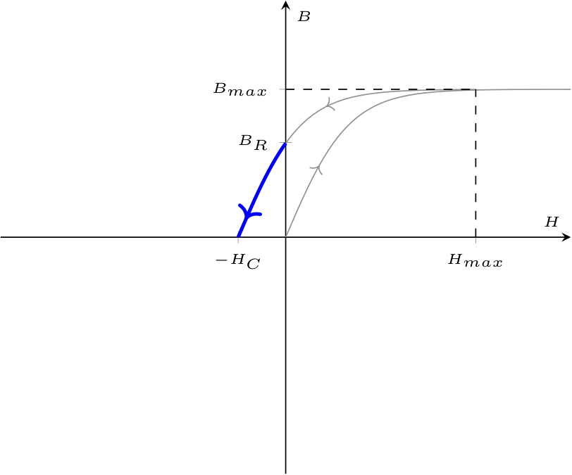
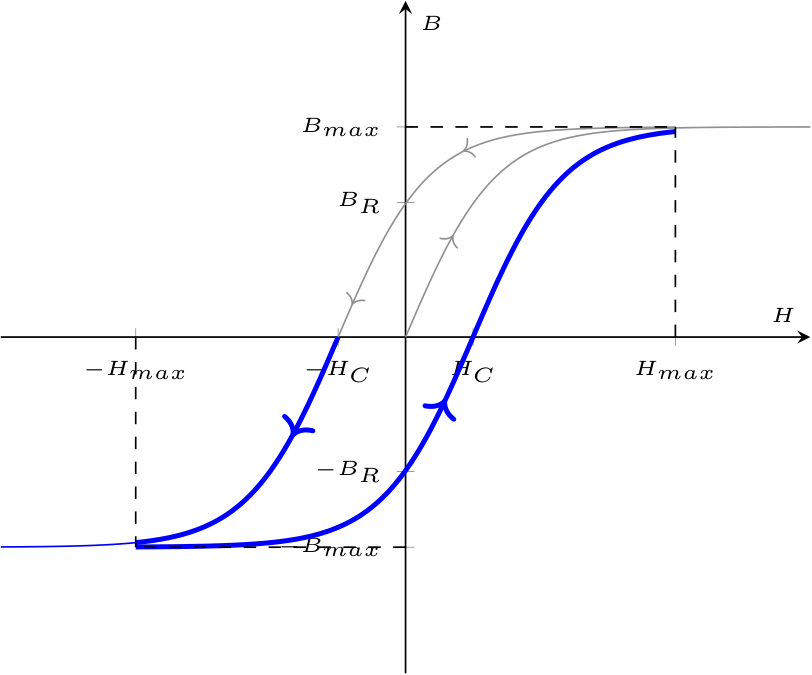

Definizione - Metodo di risoluzione simbolico
Considerando una rete in regime sinusoidale, si ha che il metodo di risoluzione simbolico consiste nell'applicare la trasformata di Steinmetz sulle equazioni differenziali al fine di ottenere equazioni algebriche più semplici da risolvere.
Definizione - Legge di Kirchhoff per le tensioni in forma simbolica (LKT)
Considerando una maglia in una rete a regime sinusoidale, la sommatoria dei fasori delle tensioni di tutti i componenti è nulla, ovvero \[ \sum_{i = 1}^{\# \text{componenti}} \underline{V}_i(t) = 0 \qquad \forall t \]
Definizione - Legge di Kirchhoff per le tensioni in forma simbolica (LKT)
Considerando una maglia in una rete a regime sinusoidale, la sommatoria dei fasori delle tensioni di tutti i componenti è nulla, ovvero \[ \sum_{i = 1}^{\# \text{componenti}} \underline{V}_i(t) = 0 \qquad \forall t \]
Definizione - Legge di Kirchhoff per le correnti in forma simbolica(LKC)
Considerando una superficie chiusa (ad esempio i nodi) in una rete a regime sinusoidale, la sommatoria dei fasori delle correnti entranti è uguale alla sommatoria dei fasori delle correnti uscenti, ovvero \[ \sum_{j = 1}^{\# \text{entranti}} \underline{I}_j(t) = \sum_{k = 1}^{\# \text{uscenti}} \underline{I}_k(t) \qquad \forall t \] o, in maniera equivalente \[ \sum_{j = 1}^{\# \text{correnti}} \pm \underline{I}_j(t) = 0 \qquad \forall t \]
Definizione - Generatore ideale di tensione sinusoidale
Il generatore ideale di tensione sinusoidale è un bipolo che permette di "imporre" una tensione pari a \[ v(t) = \sqrt{2} \cdot E \cdot \cos(\omega \cdot t + \alpha) \] e, applicando la trasformata di Steinmetz si ottiene il seguente fasore associato \[ \begin{array}{ccl} S[v(t)] & = & \sqrt{2} \cdot E \cdot \cos(\omega \cdot t + \alpha) \\ & = & \underline{E} \end{array} \]
Definizione - Generatore ideale di corrente sinusoidale
Il generatore ideale di corrente sinusoidale è un bipolo che permette di "imporre" una corrente pari a \[ i(t) = \sqrt{2} \cdot I \cdot \cos(\omega \cdot t + \alpha) \] e, applicando la trasformata di Steinmetz si ottiene il seguente fasore associato \[ \begin{array}{ccl} S[i(t)] & = & \sqrt{2} \cdot I \cdot \cos(\omega \cdot t + \alpha) \\ & = & \underline{I} \end{array} \]
Definizione - Impedenza e ammettenza
L'impedenza \( \underline{Z}\) è una grandezza fisica (misurata in Ohm \( \mathrm{ \, \Omega }\)) associata a componenti in reti a regime sinusoidale e rappresentabile da un fasore. Essa è definita come \[ \underline{Z} = \frac{\underline{V}}{\underline{I}} \] La fase di tale fasore indica lo sfasamento \( \varphi\) introdotto tra tensione e corrente:
- se tale valore è positivo, allora la tensione è in anticipo rispetto alla corrente;
- se tale valore è negativo, allora la tensione è in ritardo rispetto alla corrente.
Ammettenza
È possibile definire un'ulteriore grandezza, ovvero l'ammettenza \( \underline{Y}\) definita come \[ \underline{Y} = \frac{1}{\underline{Z}} \]Nota bene - Ad esempio
Considerando che la tensione simbolica e la corrente simbolica in una rete siano uguali a \[ \left\{ \begin{array}{ccl} \underline{V} & = & V \cdot \mathrm{e}^{\jmath \cdot \alpha} \\ \underline{I} & = & I \cdot \mathrm{e}^{\jmath \cdot \beta} \end{array} \right. \] si ha che è possibile calcolare l'impedenza come \[ \begin{array}{ccl} \underline{Z} & = & \frac{\underline{V}}{\underline{I}} \\ & = & \frac{V \cdot \mathrm{e}^{\jmath \cdot \alpha}}{I \cdot \mathrm{e}^{\jmath \cdot \beta}} \\ & = & \frac{V}{I} \cdot \mathrm{e}^{\jmath \cdot (\alpha - \beta)} \end{array} \]
Definizione - 1^legge di Ohm simbolica
Considerando reti in regime sinusoidale, si ha che è valida \[ \underline{V} = \underline{Z} \cdot \underline{I} \]
Definizione - Resistori in regime sinusoidale
Considerando un resistore in un circuito in regime sinusoidale, si ha che applicando la trasformata di Steinmetz all'equazione costitutiva di questo componente si ottiene \[ \begin{array}{ccl} v(t) = R \cdot i(t) & \xrightarrow{S[]} & S[v(t)] = S[R \cdot i(t)] \\ & \to & \underline{V} = R \cdot \underline{I} \end{array} \] Calcolando ora l'impedenza di tale componente, si ha che \[ \begin{array}{ccl} \underline{Z} & = & \frac{\underline{V}}{\underline{I}} \\ & = & R \end{array} \] ovvero, l'impedenza è un numero complesso (puramente reale) uguale a \[ \left\{ \begin{array}{ccl} Z_R & = & R \\ Z_I & = & 0 \end{array} \right. \quad \text{e} \quad \left\{ \begin{array}{ccl} \left| \underline{Z} \right| & = & R \\ \varphi & = & 0 \end{array} \right. \] È ora possibile graficare tale relazione (ipotizzando \( \alpha_V = 0\)) nel dominio fasoriale come e nel dominio temporale come


Definizione - Induttori in regime sinusoidale
Considerando un induttore in un circuito in regime sinusoidale, si ha che applicando la trasformata di Steinmetz all'equazione costitutiva di questo componente si ottiene \[ \begin{array}{ccl} v(t) = L \cdot \frac{\partial}{\partial t} i(t) & \xrightarrow{S[]} & S[v(t)] = S\left[L \cdot \frac{\partial}{\partial t} i(t)\right] \\ & \to & \underline{V} = L \cdot S\left[\frac{\partial}{\partial t} i(t)\right] \\ & \to & \underline{V} = L \cdot \jmath \cdot \omega \cdot \underline{I} \end{array} \] Calcolando ora l'impedenza di tale componente, si ha che \[ \begin{array}{ccl} \underline{Z} & = & \frac{\underline{V}}{\underline{I}} \\ & = & L \cdot \jmath \cdot \omega \end{array} \] ovvero, l'impedenza è un numero complesso (puramente immaginario) uguale a \[ \left\{ \begin{array}{ccl} Z_R & = & 0 \\ Z_I & = & L \cdot \omega \end{array} \right. \quad \text{e} \quad \left\{ \begin{array}{ccl} \left| \underline{Z} \right| & = & L \cdot \omega \\ \varphi & = & \frac{\pi}{2} \end{array} \right. \] Ipotizzando la fase relativa alla tensione \( \alpha_V = 0\), si ha che è possibile calcolare la fase relativa alla corrente come \[ \begin{array}{ccl} \varphi = \alpha_V - \alpha_I & \to & \alpha_I = \alpha_V - \varphi \\ & \to & \alpha_I = 0 - \frac{\pi}{2} \\ & \to & \alpha_I = -\frac{\pi}{2} \end{array} \] È ora possibile graficare tale relazione nel dominio fasoriale come  e nel dominio temporale come
e nel dominio temporale come 
Definizione - Condensatori in regime sinusoidale
Considerando un condensatore in un circuito in regime sinusoidale, si ha che applicando la trasformata di Steinmetz all'equazione costitutiva di questo componente si ottiene \[ \begin{array}{ccl} i(t) = C \cdot \frac{\partial}{\partial t} v(t) & \xrightarrow{S[]} & S[i(t)] = S\left[C \cdot \frac{\partial}{\partial t} v(t)\right] \\ & \to & \underline{I} = C \cdot S\left[\frac{\partial}{\partial t} v(t)\right] \\ & \to & \underline{I} = C \cdot \jmath \cdot \omega \cdot \underline{V} \end{array} \] Calcolando ora l'impedenza di tale componente, si ha che \[ \begin{array}{ccl} \underline{Z} & = & \frac{\underline{V}}{\underline{I}} \\ & = & \frac{1}{C \cdot \jmath \cdot \omega} \\ & \overset{\cdot \frac{\jmath}{\jmath}}{=} & \frac{1}{C \cdot \jmath \cdot \omega} \cdot \frac{\jmath}{\jmath} \\ & = & \jmath \cdot \left( -\frac{1}{C \cdot \omega} \right) \end{array} \] ovvero, l'impedenza è un numero complesso (puramente immaginario) uguale a \[ \left\{ \begin{array}{ccl} Z_R & = & 0 \\ Z_I & = & -\frac{1}{C \cdot \omega} \end{array} \right. \quad \text{e} \quad \left\{ \begin{array}{ccl} \left| \underline{Z} \right| & = & \frac{1}{C \cdot \omega}\\ \varphi & = & -\frac{\pi}{2} \end{array} \right. \] Ipotizzando la fase relativa alla corrente \( \alpha_V = 0\), si ha che è possibile calcolare la fase relativa alla corrente come \[ \begin{array}{ccl} \varphi = \alpha_V - \alpha_I & \to & \alpha_I = \alpha_V - \varphi \\ & \to & \alpha_I = 0 - \left( -\frac{\pi}{2} \right) \\ & \to & \alpha_I = \frac{\pi}{2} \end{array} \] È ora possibile graficare tale relazione nel dominio fasoriale come  e nel dominio temporale come
e nel dominio temporale come